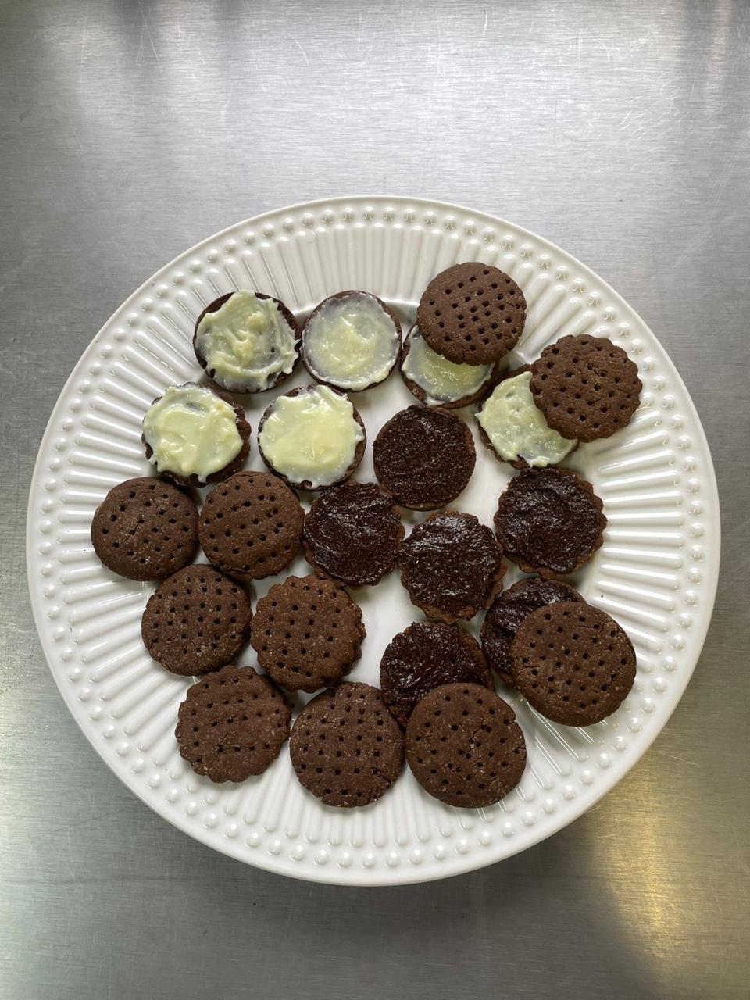

- 240g de farinha de trigo;
- 45g de cacau em pó 30%;
- 25g de margarina sem sal;
- 50ml de água.
Modo de preparo: Em uma tigela, adicione a aveia, o cacau, o leite em pó, a margarina e a água e misture com o auxílio de uma colher;
A massa ficará mais pesada e homogênea. Pegue-a com a mão e continue encorpando os ingredientes;
O ponto certo é até ela desgrudar da mão. A partir dessa etapa, modele a massa da bolacha da maneira que preferir;
Com a forma untada de margarina, distribua as bolachas e leve ao forno por 10 a 15 minutos.
Caso queira que a bolacha fique crocante, faça pequenos furos com a ajuda de um garfo na massa antes de ir ao forno.
Como opções dos recheios da bolacha, tem o de leite em pó, o de chocolate e o de morango.
Voltar